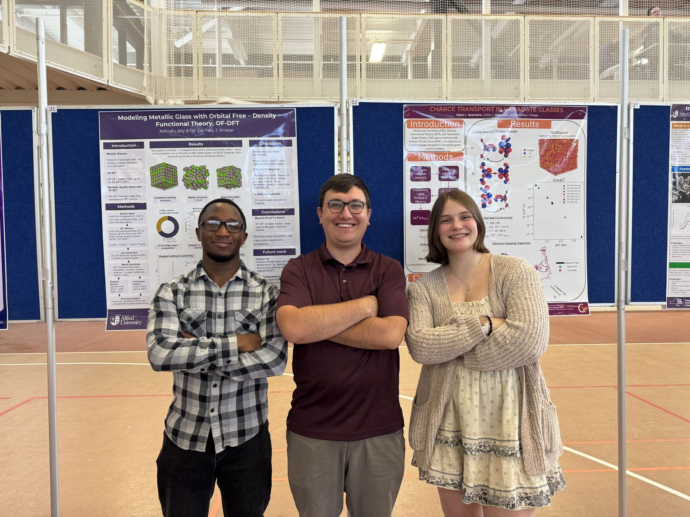

Research · Computational Materials Science
Modeling Metallic Glass with Orbital-Free Density Functional Theory (OF-DFT)

The problem
Metallic glasses are metals with no long-range atomic order. That disorder makes them strong, corrosion-resistant, and conductive, which is promising for lightweight structural materials. To understand how they form, you need to simulate many atoms. Conventional Kohn-Sham DFT (KS-DFT) scales as O(N³), so it quickly becomes too expensive.
My approach
Orbital-free DFT scales as roughly O(N log N), so it can reach system sizes that KS-DFT cannot. I used it to simulate how an aluminum-magnesium glass forms.
- System setup: a 6×6×6 fcc aluminum supercell (a = 4.05 Å) with 33% of sites substituted by magnesium, giving a 216-atom Al-Mg model at a 67:33 composition, near the eutectic.
- Method: OF-DFT molecular dynamics in DFTpy with local LDA pseudopotentials and the Wang-Teter kinetic energy density functional.
- Melt-quench protocol: NPT dynamics (Berendsen thermostat and barostat, 1 fs timestep), with the structure melted and held at 1,100 K. It was then quenched to 300 K in two ways: a stepped ramp (900 → 700 → 500 → 300 K) and a continuous linear ramp.
- Computing: jobs submitted and run on SDSC's Expanse supercomputer through the Linux command line.
- Analysis: structures visualized in OVITO; radial distribution functions, g(r), computed with a custom Python script.
Results
- The continuous quench produced an amorphous glass with no long-range order.
- The broad, split g(r) peaks match those of real amorphous Al-Mg alloys.
- OF-DFT's cost stays orders of magnitude below KS-DFT beyond about 1,000 atoms, so the approach can scale to realistic model sizes.
What's next
- Extract a reliable glass transition temperature (Tg).
- Benchmark the structural and thermal results against KS-DFT.
- Simulate larger supercells and extend the approach to other metallic glasses.
Tools: DFTpy (OF-DFT) · Python · OVITO · SDSC Expanse (HPC) · Linux